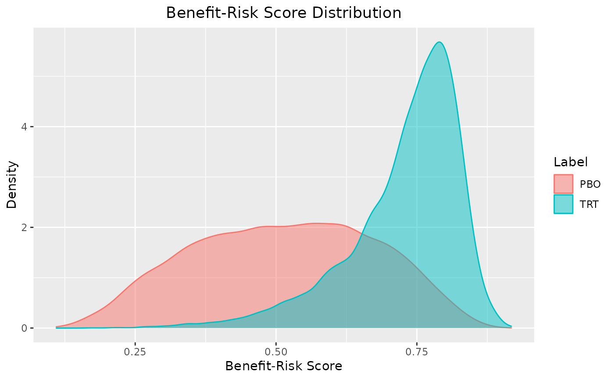
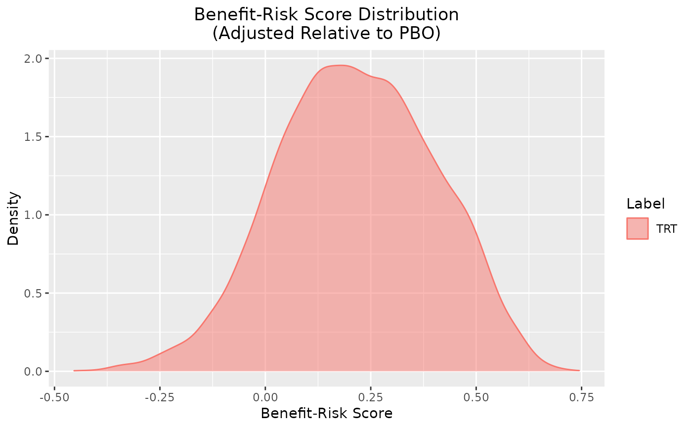
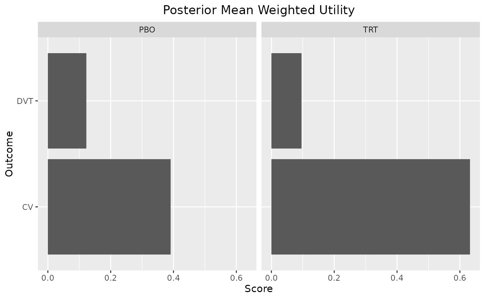
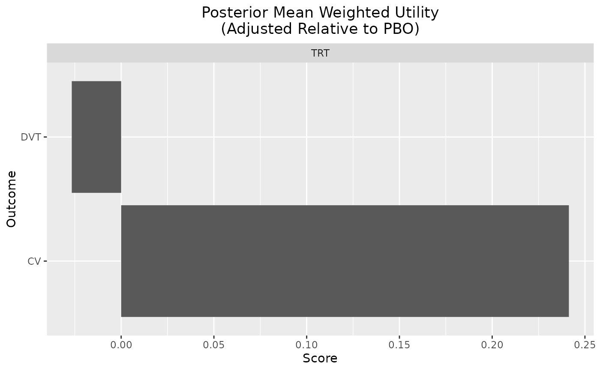
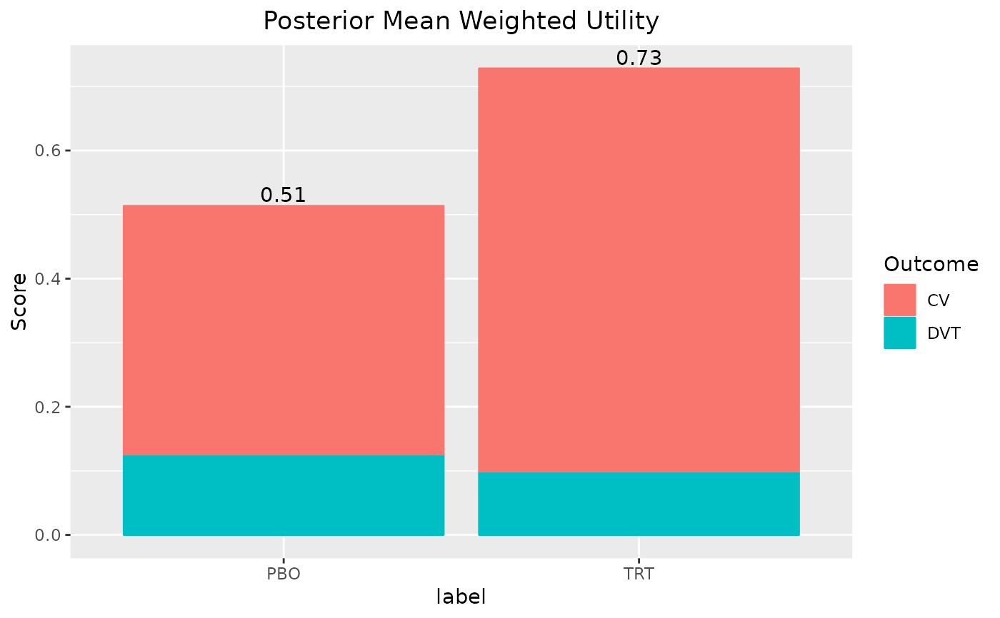

Plot Posterior Mean Utility Scores
plot_utility(x, reference = NULL, stacked = FALSE)A ggplot barplot of the posterior mean weighted utility scores.
Other plots:
plot.brisk_br()
set.seed(1132)
ilogit <- function(x) 1 / (1 + exp(-x))
out <- mcda(
benefit("CV", function(x) ilogit(x), weight = .75),
risk("DVT", function(x) ilogit(- .5 * x), weight = .25),
br_group(
label = "PBO",
CV = rnorm(1e4, .1),
DVT = rnorm(1e4, .1)
),
br_group(
label = "TRT",
CV = rnorm(1e4, 2),
DVT = rnorm(1e4, 1)
)
)
out
#> # A tibble: 20,000 × 11
#> CV CV_weight CV_uti…¹ CV_sc…² DVT DVT_w…³ DVT_u…⁴ DVT_s…⁵ label iter
#> <dbl> <dbl> <dbl> <dbl> <dbl> <dbl> <dbl> <dbl> <chr> <int>
#> 1 1.47 0.75 0.813 0.610 0.439 0.25 0.445 0.111 PBO 1
#> 2 0.239 0.75 0.559 0.420 -2.12 0.25 0.743 0.186 PBO 2
#> 3 0.969 0.75 0.725 0.544 0.974 0.25 0.381 0.0951 PBO 3
#> 4 0.655 0.75 0.658 0.494 0.0771 0.25 0.490 0.123 PBO 4
#> 5 1.51 0.75 0.819 0.615 -0.993 0.25 0.622 0.155 PBO 5
#> 6 -1.32 0.75 0.210 0.158 -0.874 0.25 0.607 0.152 PBO 6
#> 7 0.395 0.75 0.598 0.448 1.03 0.25 0.375 0.0936 PBO 7
#> 8 -1.43 0.75 0.193 0.145 -0.903 0.25 0.611 0.153 PBO 8
#> 9 0.180 0.75 0.545 0.409 -0.685 0.25 0.585 0.146 PBO 9
#> 10 -0.960 0.75 0.277 0.208 -1.50 0.25 0.679 0.170 PBO 10
#> # … with 19,990 more rows, 1 more variable: total <dbl>, and abbreviated
#> # variable names ¹CV_utility, ²CV_score, ³DVT_weight, ⁴DVT_utility,
#> # ⁵DVT_score
summary(out, probs = c(.025, .5, .975))
#> $summary
#> # A tibble: 2 × 5
#> label mean `2.50%` `50.00%` `97.50%`
#> <chr> <dbl> <dbl> <dbl> <dbl>
#> 1 PBO 0.513 0.221 0.518 0.794
#> 2 TRT 0.728 0.472 0.752 0.857
#>
#> $scores
#> # A tibble: 20,000 × 11
#> CV CV_weight CV_uti…¹ CV_sc…² DVT DVT_w…³ DVT_u…⁴ DVT_s…⁵ label iter
#> <dbl> <dbl> <dbl> <dbl> <dbl> <dbl> <dbl> <dbl> <chr> <int>
#> 1 1.47 0.75 0.813 0.610 0.439 0.25 0.445 0.111 PBO 1
#> 2 0.239 0.75 0.559 0.420 -2.12 0.25 0.743 0.186 PBO 2
#> 3 0.969 0.75 0.725 0.544 0.974 0.25 0.381 0.0951 PBO 3
#> 4 0.655 0.75 0.658 0.494 0.0771 0.25 0.490 0.123 PBO 4
#> 5 1.51 0.75 0.819 0.615 -0.993 0.25 0.622 0.155 PBO 5
#> 6 -1.32 0.75 0.210 0.158 -0.874 0.25 0.607 0.152 PBO 6
#> 7 0.395 0.75 0.598 0.448 1.03 0.25 0.375 0.0936 PBO 7
#> 8 -1.43 0.75 0.193 0.145 -0.903 0.25 0.611 0.153 PBO 8
#> 9 0.180 0.75 0.545 0.409 -0.685 0.25 0.585 0.146 PBO 9
#> 10 -0.960 0.75 0.277 0.208 -1.50 0.25 0.679 0.170 PBO 10
#> # … with 19,990 more rows, 1 more variable: total <dbl>, and abbreviated
#> # variable names ¹CV_utility, ²CV_score, ³DVT_weight, ⁴DVT_utility,
#> # ⁵DVT_score
#>
summary(out, reference = "PBO")
#> $summary
#> # A tibble: 1 × 5
#> label mean `2.50%` `97.50%` reference
#> <chr> <dbl> <dbl> <dbl> <chr>
#> 1 TRT 0.215 -0.150 0.555 PBO
#>
#> $scores
#> # A tibble: 10,000 × 12
#> CV CV_weight CV_utility CV_sc…¹ DVT DVT_w…² DVT_u…³ DVT_s…⁴ label iter
#> <dbl> <dbl> <dbl> <dbl> <dbl> <dbl> <dbl> <dbl> <chr> <int>
#> 1 1.01 0.75 0.733 0.550 0.381 0.25 0.453 0.113 TRT 1
#> 2 1.66 0.75 0.841 0.631 1.84 0.25 0.285 0.0713 TRT 2
#> 3 0.473 0.75 0.616 0.462 0.403 0.25 0.450 0.112 TRT 3
#> 4 2.59 0.75 0.930 0.698 0.0774 0.25 0.490 0.123 TRT 4
#> 5 2.39 0.75 0.916 0.687 2.47 0.25 0.225 0.0563 TRT 5
#> 6 2.43 0.75 0.919 0.689 1.08 0.25 0.368 0.0920 TRT 6
#> 7 1.58 0.75 0.828 0.621 2.02 0.25 0.267 0.0667 TRT 7
#> 8 3.10 0.75 0.957 0.718 1.04 0.25 0.373 0.0932 TRT 8
#> 9 3.48 0.75 0.970 0.728 0.644 0.25 0.420 0.105 TRT 9
#> 10 1.10 0.75 0.750 0.563 0.586 0.25 0.427 0.107 TRT 10
#> # … with 9,990 more rows, 2 more variables: total <dbl>, reference <chr>, and
#> # abbreviated variable names ¹CV_score, ²DVT_weight, ³DVT_utility, ⁴DVT_score
#>
plot(out)

plot(out, reference = "PBO")

plot_utility(out)

plot_utility(out, reference = "PBO")

plot_utility(out, stacked = TRUE)
